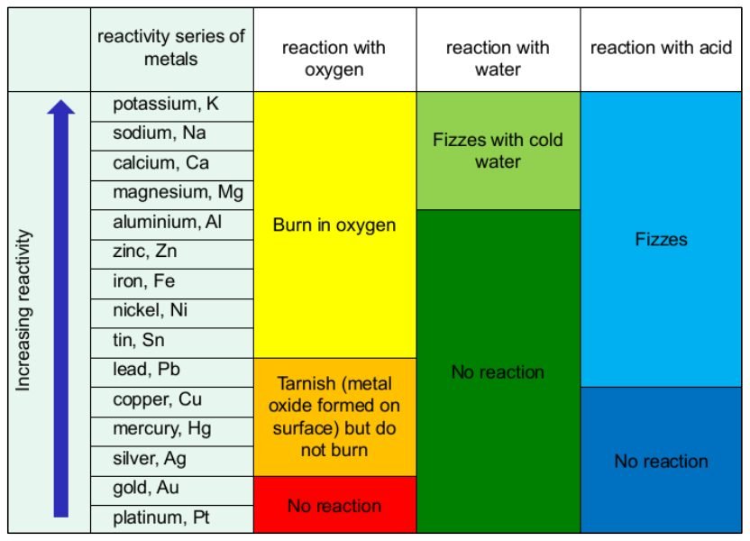
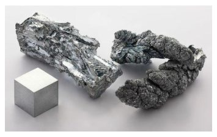
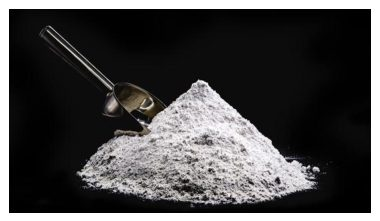
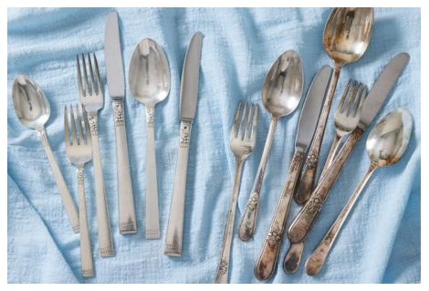
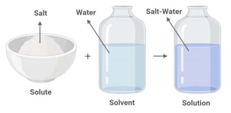
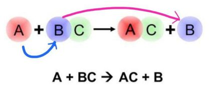
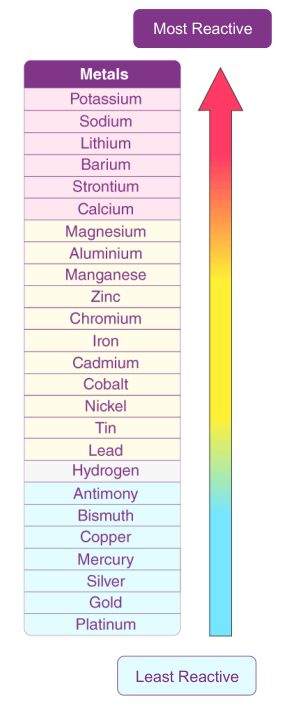
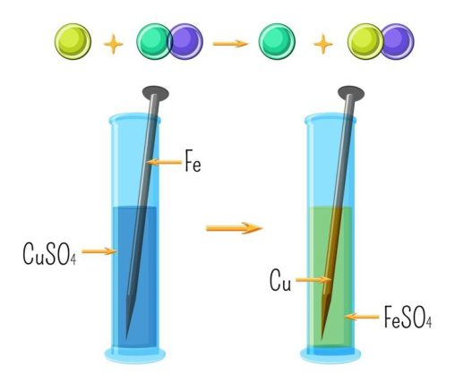

6.1 Reactivity Series
Metals can react with water, acids and oxygen, and how readily they do so is their reactivity. Very reactive metals readily form new substances: freshly cut sodium is shiny grey but quickly turns dull white as it reacts with oxygen; potassium and calcium react vigorously with water. Very unreactive metals like gold and platinum don't react with oxygen even in a Bunsen flame, which makes them ideal for jewellery.
The reactivity series ranks metals from most to least reactive. It helps predict how metals behave and choose the right material for a job.

6.2 Reactions of Metals with Oxygen
When metals react with oxygen they form metal oxides. Reactive metals (potassium, magnesium) react quickly, often with heat or light; less reactive metals like copper react slowly, sometimes forming oxides only over long periods. These reactions explain rusting, corrosion and protective oxide layers.



- General word equation: metal + oxygen → metal
- Choose the product of each reaction.
- Al(s) + O2(g) →
- Zn(s) + O2(g) →
- Fe(s) + O2(g) →
- Sn(s) + O2(g) →
- Pb(s) + O2(g) →
- Cu(s) + O2(g) →
Balanced: 4Al + 3O₂ → 2Al₂O₃; 2Zn + O₂ → 2ZnO; 4Fe + 3O₂ → 2Fe₂O₃ (iron(III) oxide, as in rust); Sn + O₂ → SnO₂ (tin(IV) oxide); 2Pb + O₂ → 2PbO; 2Cu + O₂ → 2CuO.
- Write the word equation and balanced chemical equation for zinc reacting with oxygen.
- Describe one application of zinc oxide and how it is formed.
- Explain why silver tarnishes and write the equation for forming silver oxide.
- zinc + oxygen → zinc oxide; 2Zn(s) + O₂(g) → 2ZnO(s).
- Zinc oxide is used in sunscreen (it blocks UV) and as a protective coating; it forms when zinc reacts with oxygen in the air (or is burned).
- Silver slowly reacts with oxygen (and sulfur compounds) in the air, forming a dull layer on the surface. 4Ag(s) + O₂(g) → 2Ag₂O(s).
6.3 Reactions of Metals with Water
When metals react with water they form a metal hydroxide and hydrogen gas. The intensity depends on the metal's place in the reactivity series: Group 1 metals react explosively, Group 2 metals like calcium less vigorously.
Metals lower in the series, such as zinc and iron, react very slowly with water or not at all under normal conditions.
- General word equation: metal + water → metal +
- Choose the products.
- Li(s) + H2O(l) →
- Na(s) + H2O(l) →
- K(s) + H2O(l) →
Balanced: 2Li + 2H₂O → 2LiOH + H₂; 2Na + 2H₂O → 2NaOH + H₂; 2K + 2H₂O → 2KOH + H₂.
- Write the word equation and balanced chemical equation for potassium reacting with water.
- Compare the reactions of potassium and calcium with water.
- Explain why some metals, like zinc and iron, don't react with water under normal conditions.
- potassium + water → potassium hydroxide + hydrogen; 2K(s) + 2H₂O(l) → 2KOH(aq) + H₂(g).
- Potassium floats, melts, darts around and bursts into a lilac flame: very vigorous. Calcium sinks and fizzes steadily, turning the water cloudy, without flames. Potassium is higher in the reactivity series (Group 1, loses one electron easily).
- Zinc and iron are lower in the reactivity series: they lose electrons much less easily, so their reaction with cold water is too slow to notice (they react with steam or acids instead).
6.4 Reactions of Metals with Acid
More reactive metals (magnesium, zinc) react readily with acids, producing bubbles of hydrogen and a salt, often releasing heat. Less reactive metals like iron react slowly; copper and gold don't react with dilute acids.
You need to know these acids and the salts they make:
| Acid | Formula | Salt ending |
|---|---|---|
| Hydrochloric acid | HCl | …chloride |
| Sulfuric acid | H2SO4 | …sulfate (sulphate) |
| Nitric acid | HNO3 | …nitrate |
Ion charges for writing salt formulas are in the valency table.
Test your understanding
- Describe the general reaction between a metal and an acid and write its general word equation.
- Which gas is always produced when a metal reacts with an acid?
- A reactive metal reacts with an acid, producing bubbles of hydrogen and a salt (the metal ion with the acid's negative ion). metal + acid → salt + hydrogen.
- Hydrogen (it gives a "pop" with a lit match).
| Reaction | Salt |
|---|---|
| Sodium + hydrochloric acid | |
| Aluminium + hydrochloric acid | |
| Zinc + sulfuric acid | |
| Iron(II) + nitric acid | |
| Lead(II) + sulfuric acid |
Balanced equations: 2Na + 2HCl → 2NaCl + H₂; 2Al + 6HCl → 2AlCl₃ + 3H₂; Zn + H₂SO₄ → ZnSO₄ + H₂; Fe + 2HNO₃ → Fe(NO₃)₂ + H₂; Pb + H₂SO₄ → PbSO₄ + H₂.
Write the full balanced chemical equation for each reaction in question 3.
Na: 2Na(s) + 2HCl(aq) → 2NaCl(aq) + H₂(g)
Al: 2Al(s) + 6HCl(aq) → 2AlCl₃(aq) + 3H₂(g)
Zn: Zn(s) + H₂SO₄(aq) → ZnSO₄(aq) + H₂(g)
Fe: Fe(s) + 2HNO₃(aq) → Fe(NO₃)₂(aq) + H₂(g)
Pb: Pb(s) + H₂SO₄(aq) → PbSO₄(s) + H₂(g) (lead sulfate is insoluble, so the reaction quickly stops)
- Explain why some metals, like copper and gold, don't react with acids under normal conditions.
- Research why sulfuric acid is widely used in industry and give two examples of its applications.
- They are below hydrogen in the reactivity series: they hold their electrons too tightly to displace hydrogen from the acid.
- Sulfuric acid is cheap, strong and versatile. E.g. making fertilisers (ammonium sulfate and superphosphate), as the electrolyte in car (lead-acid) batteries, in metal processing (cleaning/"pickling" steel, extracting copper), and in making detergents and paints.
6.5 Displacement Reactions
A solution is a solute dissolved in a solvent. Solutions with water as the solvent are aqueous solutions, shown by (aq) in equations. Many ionic compounds dissolve in water, so their ions can move freely.

When a solid metal is placed in a solution of an ionic compound, a displacement reaction may occur: the metals "swap places", with the more reactive metal displacing the less reactive metal from its compound.


Reactivity is a measure of how easily a metal loses electrons to form positive ions. Potassium is more reactive than copper, so it would displace copper from its compound.

Test your understanding
Compare positions in the reactivity series. In practice potassium and calcium would react with the water in the solution first, but they are more reactive than sodium and magnesium, so in principle they would displace them.
Write the balanced equation for each displacement reaction that occurs in question 1.
Mg + CuSO₄ → MgSO₄ + Cu
Zn + FeCl₂ → ZnCl₂ + Fe
Cu + 2AgNO₃ → Cu(NO₃)₂ + 2Ag
K + NaCl → KCl + Na (in principle)
Fe + 2AgNO₃ → Fe(NO₃)₂ + 2Ag
Sn + Pb(NO₃)₂ → Sn(NO₃)₂ + Pb
Ca + MgSO₄ → CaSO₄ + Mg (in principle)
- What factors determine whether a metal will displace another metal in solution?
- How does the reactivity series influence displacement reactions?
- What happens when a more reactive metal is placed in a solution of a less reactive metal's salt?
- Why are displacement reactions used to extract metals from their ores?
- The relative reactivity of the two metals: how easily each loses electrons.
- A metal higher in the series displaces any metal below it from a solution of its salt; it can't displace a metal above it.
- The more reactive metal dissolves (forms ions) and the less reactive metal is deposited as a solid; the solution may change colour.
- A cheaper, more reactive metal (or carbon) can be used to pull a less reactive metal out of its compound, e.g. iron scrap displacing copper from copper sulfate solution in copper mining.